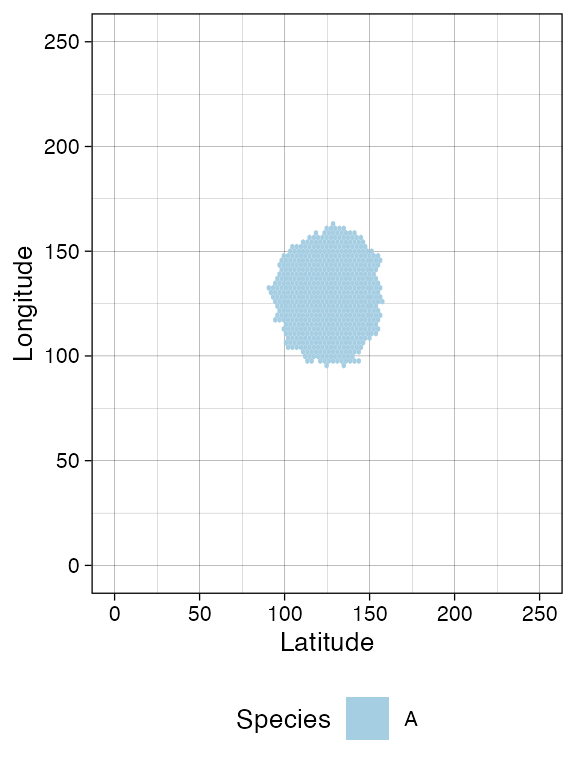
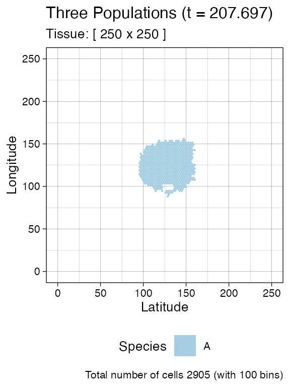
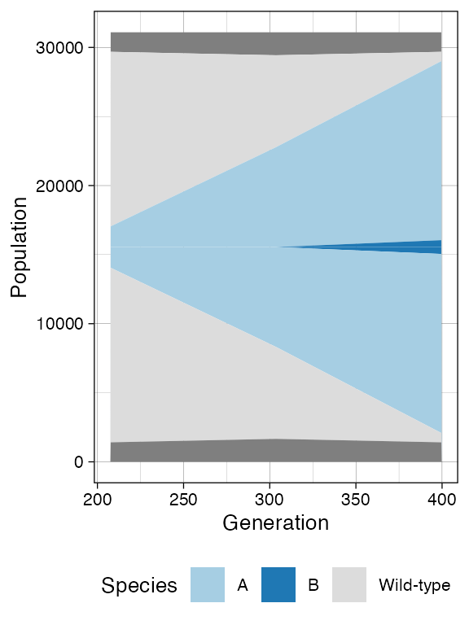
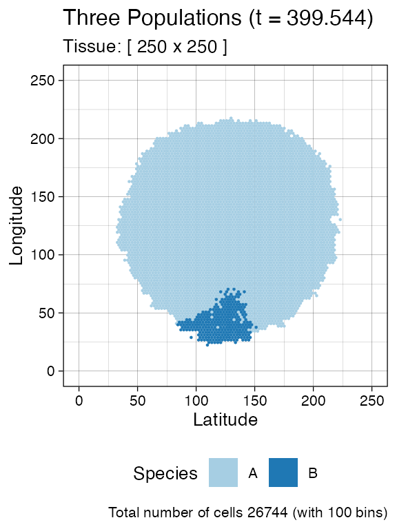
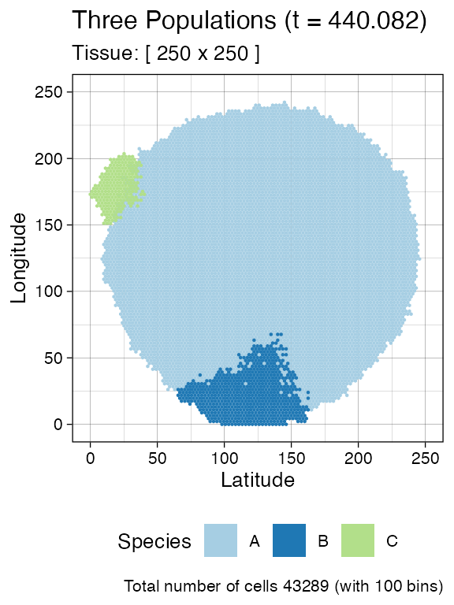
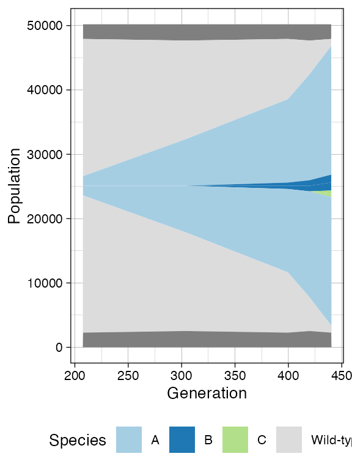

Disclaimer: RACES/rRACES internally implements the probability distributions using the C++11 random number distribution classes. The standard does not specify their algorithms, and the class implementations are left free for the compiler. Thus, the simulation output depends on the compiler used to compile RACES, and because of that, the results reported in this article may differ from those obtained by the reader.
We build a tumour with three populations branching.
library(rRACES)
# set the seed of the random number generator
set.seed(0)
sim <- SpatialSimulation("Three Populations", width=250, height=250)
sim$death_activation_level <- 20
sim$add_mutant(name = "A", growth_rates = 0.08, death_rates = 0.01)
sim$place_cell("A", 125, 125)
sim$run_up_to_size("A", 3000)
#> [████████████████████████████████████████] 100% [00m:00s] Saving snapshot
plot_tissue(sim)
We sample
n_w <- n_h <- 7
ncells <- 0.8 * n_w * n_h
# Sampling ncells with random box sampling of boxes of size n_w x n_h
bbox <- sim$search_sample(c("A" = ncells), n_w, n_h)
sim$sample_cells("S_1_1", bbox$lower_corner, bbox$upper_corner)
bbox <- sim$search_sample(c("A" = ncells), n_w, n_h)
sim$sample_cells("S_1_2", bbox$lower_corner, bbox$upper_corner)
plot_tissue(sim)
plot_muller(sim)Second mutant starts.
# New submutant
sim$add_mutant(name = "B", growth_rates = 0.13, death_rates = 0.01)
sim$mutate_progeny(sim$choose_cell_in("A"), "B")
sim$run_up_to_size("B", 1000)
#> [████████████████████████████████████████] 100% [00m:00s] Saving snapshot
plot_tissue(sim)
plot_muller(sim)
Random sampling of cells from both mutant A and
B.
# Sampling with random box sampling
bbox <- sim$search_sample(c("A" = ncells), n_w, n_h)
sim$sample_cells("S_2_1", bbox$lower_corner, bbox$upper_corner)
bbox <- sim$search_sample(c("B" = ncells), n_w, n_h)
sim$sample_cells("S_2_2", bbox$lower_corner, bbox$upper_corner)
plot_tissue(sim)
Finally, a third mutant branching from A.
# New submutant
sim$add_mutant(name = "C", growth_rates = 0.6, death_rates = 0.01)
sim$mutate_progeny(sim$choose_cell_in("A"), "C")
sim$run_up_to_size("C", 1000)
#> [████████████████████████████████████████] 100% [00m:00s] Saving snapshot
plot_tissue(sim)
plot_muller(sim)
With sampling of mutants B and C.
# Sampling with random box sampling
bbox <- sim$search_sample(c("B" = ncells), n_w, n_h)
sim$sample_cells("S_3_1", bbox$lower_corner, bbox$upper_corner)
bbox <- sim$search_sample(c("C" = ncells), n_w, n_h)
sim$sample_cells("S_3_2", bbox$lower_corner, bbox$upper_corner)
plot_tissue(sim, num_of_bins = 100)
plot_muller(sim)
Finally, the tree plot where we annotate samples and MRCAs of each sample.
# Tree data
forest <- sim$get_samples_forest()
library(dplyr)
#>
#> Attaching package: 'dplyr'
#> The following objects are masked from 'package:stats':
#>
#> filter, lag
#> The following objects are masked from 'package:base':
#>
#> intersect, setdiff, setequal, union
plot_forest(forest) %>%
annotate_forest(forest)